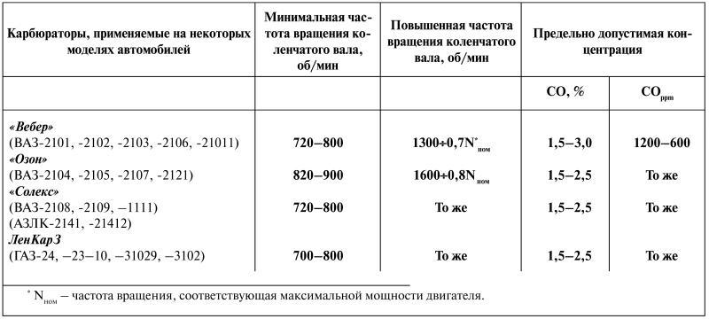

О токсичности автомобиля
Содержание в отработавших газах окиси углерода (СО) и углеводородов (СН) при работе двигателя проверяют в режиме холостого хода.
Предельно допустимая концентрация СО и СН в отработавших газах в автомобилях с карбюраторными двигателями не должна превышать значений, приведенных в табл. 1.
Таблица 1

Регулировку уровня токсичности и оборотов холостого хода с использованием винтов количества и качества смеси на карбюраторах производят только после выполнения следующих условий.
Требуемые зазоры в механизме привода клапанов установлены правильно.
Должен быть отрегулирован угол опережения зажигания для бензина, который залит в бак, чтобы при движении и резком открытии дроссельных заслонок прослушивался «стук пальцев» поршней.[1]
Контакты прерывателя нужно очистить от следов окисления, отрегулировать зазоры в свечах зажигания.
Наконечники высоковольтных проводов должны быть очищены и надежно держать провода в свечах и крышке распределителя. Воздушный (масляный) фильтр пригоден к эксплуатации. Подсос воздуха в соединениях между фланцем карбюратора и впускным трубопроводом устранен. Система выпуска не имеет утечек. Двигатель прогрет до рабочей температуры.
Примечание. Подробные рекомендации о регулировке клапанов, установке момента зажигания, очистке или замене контактов прерывателя и т. д. даются в инструкциях по эксплуатации данного автомобиля.
Каждый автомобилист на случай проверки содержания вредных примесей в выхлопных газах его машины должен иметь при себе все данные, характеризующие его машину, а именно:
• модель автомобиля;
• год выпуска;
• модель двигателя;
• рабочий объем, л;
• степень сжатия;[2]
• тип карбюратора;
• год выпуска;
• минимальная частота вращения;
• коленвала при холостом ходе, об/мин;
• повышенная частота вращения;
• коленвала в диапазоне от 1300 об/мин до 0,7Nном;
• концентрация СО, %;
• концентрация СН, ppm.
Выхлопные газы и меры, ограничивающие их выбросО наличии вредных для экологии элементов в выхлопных газах автомобилей свидетельствует дым, выбрасываемый из выхлопной трубы.
Как правило, автомобили ранних выпусков грешат высокой степенью дымности. Концентрация СО и СH у таких машин подчас превышает всякие пределы.
К сожалению, далеко не все новые автомобили лишены этого серьезного недостатка, и их выхлопные газы также содержат СО и СН в недопустимых количествах.
Если автомобиль отвечает требованиям по концентрации СО на частоте вращения коленчатого вала на холостом ходу, а при проверке содержания СН при тех же оборотах нельзя добиться хороших показателей, в этих случаях концентрацию СН можно проверить при повышенных оборотах коленчатого вала – от 1300 об/мин до 0,7Nном. Если величина СН невысока – около 1200 ppm или ниже, то и концентрация СО не будет превышать норму.
В распоряжении автолюбителя, как правило, нет газоанализаторов, обнаруживающих окись углерода и тем более углеводороды. С этой целью можно использовать тахометр, но и он не всегда бывает под рукой. Надеяться можно только на себя, на умение ощущать частоту вращения коленвала на холостом ходу.
Каковы же причины, вызывающие повышенную концентрацию СО в выхлопных газах, и как их устранить?
СТЕПЕНЬ КОНЦЕНТРАЦИИ ОКИСИ УГЛЕРОДА СО в выхлопных газах зависит прежде всего от качества топлива и его смеси с воздухом.
Превышение концентрации СО может быть вызвано также засорением воздушного (масляного) фильтра. В этом случае следует снять воздухоочиститель, промыть его фильтрующий элемент бензином или заменить (сменить загрязненное масло).
При высоком уровне бензина в поплавковой камере (богатая смесь) также может произойти чрезмерный выброс окиси углерода с выхлопными газами. Снимите крышку с карбюратора и отрегулируйте положение поплавка ограничителем хода поплавка и язычком регулировки уровня.
Износ запорного клапана поплавковой камеры также может быть причиной повышенной концентрации СО. Замените штатную иглу с конической запорной поверхностью новой.
Заедание привода воздушной заслонки. Полностью открыть воздушную заслонку. Отрегулировать тягу управления воздушной заслонки так, чтобы она полностью открывалась без заеданий.
Износ цилиндров (гильз), поршней и поршневых колец, пригорание (закоксовывание) или поломка поршневых колец – все это может привести к высокому показателю содержания окиси углерода в выхлопных газах. Снимите головку блока вместе с коллектором, карбюратором и вентилятором и масляный поддон, предварительно слив охлаждающую жидкость и масло. Проверьте состояние разобранных поршней, поршневых колец, гильз и сопряжении. Очистите от нагара и замените поломанные детали, а также детали, образовавшие зазоры в сопряжении, близкие к предельным.
На исправном и проверенном по основным регулировочным параметрам, прогретом двигателе винтами количества и качества добейтесь устойчивой работы двигателя с необходимым составом смеси. На прогретом до рабочей температуры 80 °C двигателе сначала винтом количества (упорный винт дроссельной заслонки карбюратора) установите минимально устойчивую частоту вращения коленчатого вала и немного ее увеличьте (на 10–15 %). Затем винтом качества найдите такое положение, при котором обороты двигателя будут наибольшими. Если обороты станут больше, то винтом количества их надо снизить и затем вернуться к повышенным. Снова, но уже винтом качества, добиться максимальных оборотов (иногда эти действия приходится повторять).
Теперь медленно заворачивайте винт качества до тех пор, пока двигатель не будет работать с заметными перебоями и тогда поверните винт качества обратно на одну треть.
Итак, карбюратор двигателя отрегулирован на нормальную смесь при малой частоте вращения коленчатого вала (720–800 об/мин) на холостом ходу.
КОНЦЕНТРАЦИЯ УГЛЕВОДОРОДОВ СН в выхлопных газах измеряется в ppm (промилле – частях на миллион). Показатели содержания СН для разных типов двигателей различные. Они зависят также от качества регулировки двигателя на повышенных оборотах коленчатого вала и от всех тех причин, которые вызывают сверхнормативное содержание в выхлопных газах окиси углерода СО, о чем было сказано выше.